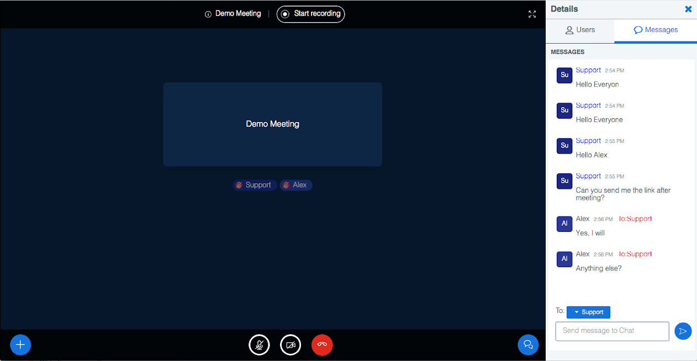

Introduction
Open GLM is an open source web conference system built on top of BigBlueButton. Open GLM has been developed with the aim to customize BigBlueButton for online educational institutions and businesses. Moreover, the customized code of OpenGLM is offered as an open-source as a contribution to the community.
BigBlueButton is one of the best open source web conferencing software which is being integrated with many applications. While customizing BigBlueButton for few of the companies, it was observed that there could be few customizations which would not be acceptable directly by the BigBlueButton. Therefore, all those customizations have made open sourced here on this project if anyone wishes to use them.
We will also try to submit our implementation to BigBlueButton main repository from time to time or as and when requested by any of our users.
Below are the customizations which have been developed for Open GLM
Custom Features:-
Single Chat Window
Single chat window is provided, instead of a separate window for each user. It becomes difficult sometimes for users to chat with multiple users at a time. Especially for teachers where multiple students ask questions or send messages.
Hide/Show Action and Navigation Bar
To maximize meeting area, navigation and action panels are animated to show and hide based on mouse movement.

Right Side Chat Window
Chat window is moved towards right from left - similar to how it is in different web conferencing systems for better usability.
Single Zoom Button
A single button added for zoom in/out entire screen rather than individual control/elements of meeting.
Leave Meeting Button
Customized button to leave/end meeting in action bar. In the current implementation of BigBlueButton it is added under settings icon.
Meeting Info
Customized a message box for users to see and share meeting information.